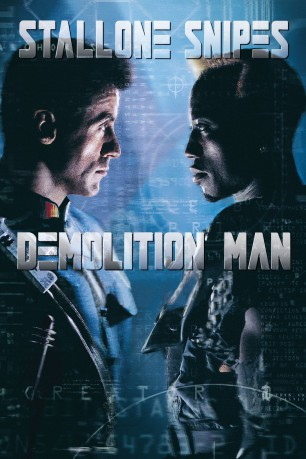

#2891 Demolition Man
 
 IMDB-Wertung: 6.6 / 10
IMDB-Wertung: 6.6 / 10  Metascore: 34
Metascore: 34 
Im Jahr 1996 wird der verurteilte Schwerverbrecher Phoenix bis ins 21. Jahrhundert eingefroren. Nachdem er seine Strafe “abgesessen” hat, wird er wieder aufgetaut, doch die Gesellschaft hat sich verändert: Es gibt keine Verbrechen mehr, und als Phoenix seine alten Gewohnheiten wieder aufnimmt, sieht sich die Polizei ausser Stande, es mit ihm aufzunehmen. Also wird der ehemalige Cop Spartan, der Phoenix damals verhaftet hat und unschuldigerweise ebenfalls eingefroren wurde, auch wieder aus dem Kälteschlaf erweckt, um dem Wahnsinnigen Paroli zu bieten…
Jahr: 1993
Dauer: 115 Minuten
FSK: 16
Land: USA Studio: Warner Bros.Tonspuren: DD5.1 - ,
Untertitel:
Auflösung: 1080p (1920x800) Größe: 6400 MB
Genre: Action, Thriller, Sci-Fi, Krimi
Regisseur: Marco Brambilla
Drehbuch: Peter M. Lenkov, Robert Reneau, Daniel Waters, Robert Reneau, Peter M. Lenkov
Soundtrack: Elliot Goldenthal
Darsteller:
 Sylvester Stallone als John Spartan
Sylvester Stallone als John Spartan Wesley Snipes als Simon Phoenix
Wesley Snipes als Simon Phoenix Sandra Bullock als Lenina Huxley
Sandra Bullock als Lenina Huxley Nigel Hawthorne als Dr. Raymond Cocteau
Nigel Hawthorne als Dr. Raymond Cocteau Benjamin Bratt als Alfredo Garcia
Benjamin Bratt als Alfredo Garcia Bob Gunton als Chief George Earle
Bob Gunton als Chief George Earle Glenn Shadix als Associate Bob
Glenn Shadix als Associate Bob Denis Leary als Edgar Friendly
Denis Leary als Edgar Friendly Grand L. Bush als Zachary Lamb - Young
Grand L. Bush als Zachary Lamb - Young Pat Skipper als Helicopter Pilot
Pat Skipper als Helicopter Pilot- Mark Colson als Warden William Smithers - Young
 John Enos III als Prisoner
John Enos III als Prisoner Troy Evans als Tough Cop
Troy Evans als Tough Cop- Don Charles McGovern als Hopper - Prison Guard
 Bill Cobbs als Zachary Lamb - Aged
Bill Cobbs als Zachary Lamb - Aged- Paul Perri als Squad Leader
- Trent Walker als Boggle Guard
 Chris Durand als Museum Guard
Chris Durand als Museum Guard- Brett A. Jones als Museum Guard
- Dan Cortese als Taco Bell Entertainer
- Lara Harris als Taco Bell Patron
- Brandy Ledford als Fiber Op Girl
 Jack Black als Wasteland Scrap
Jack Black als Wasteland Scrap- Carlton Wilborn als Wasteland Scrap
- Rhino Michaels als CryoCon
 Jesse Ventura als CryoCon
Jesse Ventura als CryoCon- Mark Atteberry als Museum Patron , uncredited
 Adrienne Barbeau als Main Frame Computer , uncredited
Adrienne Barbeau als Main Frame Computer , uncredited- Vanna Bonta als Computer , uncredited
- Ric Drasin als Supporting , uncredited
- Mogens Eckert als Computer Head on Rotating Screen , uncredited
- Bryan Hanna als Wasteland Scrap , uncredited
- Vasilika Vanya Marinkovic als Extra , uncredited
 Paul Dion Monte als Cryo Prisoner , uncredited
Paul Dion Monte als Cryo Prisoner , uncredited- Loralyn Peterson als (uncredited
 Rob Schneider als Erwin , uncredited
Rob Schneider als Erwin , uncredited- Stewart Skelton als Stunned Museum Guard , uncredited
- Kevin Ula Christie als Rogue Cop , uncredited
 Steve Kahan als Captain Healy
Steve Kahan als Captain Healy- Paul Bollen als T.F.R. Officer
 Andre Gregory als Warden William Smithers - Aged
Andre Gregory als Warden William Smithers - Aged- Patricia Rive als Police Officer
- Anneliza Scott als Police Officer
- Dean Minerd als Police Officer
 Kristopher Logan als Troubled Guy
Kristopher Logan als Troubled Guy- Susan Lentini als T.V. Reporter
- Casey Wallace als Little Girl
- Sam Nehira als Taco Bell Patron
- Claude Oatts als Taco Bell Patron
- Alex Chapman als Taco Bell Scrap
Datei: X:\1993\Demolition Man (1993, FSK16, 1920x800).mkv seit 29.12.2015
Festplatte: HD 1992-1995
 Es gibt insgesamt 68 Filme in der Gruppe '1993'
Es gibt insgesamt 68 Filme in der Gruppe '1993'